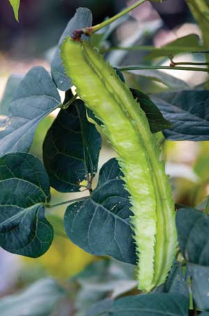
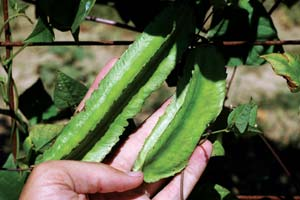
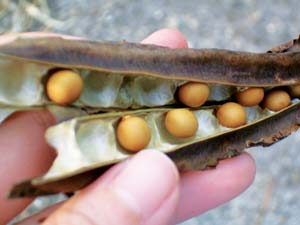
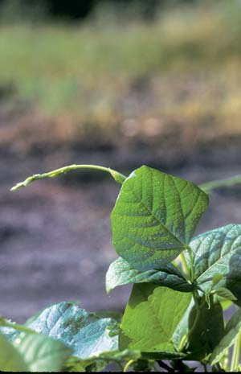
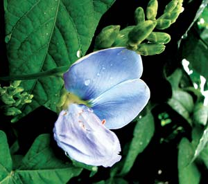

Introducing The Hunan Winged Bean
Pods, seeds, blossoms and tubers - you can eat it all!
By William Woys Weaver
June/July 2007
The winged bean is one of the newest Asian vegetables coming to market these days, and its appearance is long overdue. Known for centuries in tropical Asia, this attractive climbing perennial is more or less your total meal: all parts of the plant are edible - the pods, the beans inside, the shoots, the flowers and even the tuber.
The seeds and tubers have been getting a lot of attention in the scientific press because of their high protein content, which can be up to 20 percent - way ahead of potatoes and yams. But it’s the pods we generally see in Asian markets these days: long, flat and covered with frilly “wings” along four edges. Best of all, winged beans are fairly easy to grow and make a flavorful addition to stir-fries and grills. The taste of the pods is something between a snow pea and asparagus; they are terrific when grilled and served with dipping sauce (see recipe, below).
You won’t find much about them on the Internet because the beans are new to Americans, and commercial growers have yet to settle on a name that does not create confusion at the produce stand. Right now the beans are sold as four-angled beans, Goa beans, princess beans, winged peas and winged beans.
The mature pods can grow up to 9 inches long, though they taste better when picked small, no more than 6 inches long. Most commercially grown beans are harvested at 4 to 6 inches. When the pods become too ripe, they get stringy and tough, but the flip side is that the seeds inside can be eaten just like your regular garden variety shelling peas. The ripe (dry) seeds can be cooked like beans by first soaking them in water for an hour, then boiling for about 25 to 30 minutes. The tender shoots and white or pale blue flowers can be eaten raw, and add a lot of pizzazz to summer salads.
Winged beans (Psophocarpus tetra-gonolobus) are said to have originated in Mauritius or Madagascar. They are thought to have been disseminated by Arabs because some of the names used for the beans in places such as Malaysia (where the beans are called “kacang botol”) are derived from Arabic. This is one of the most important vegetables in south Indian and Thai cooking because the plants are perennial in the tropics and they supply a steady source of food year-round. Their nitrogen-fixing ability helped secure their role as a cover crop on banana plantations, both to enrich the soil and to provide an alternative source of income when bananas are not producing. They are adaptable to a wide variety of conditions, which caused them to spread quickly. Today there are hundreds of varieties, many of which were developed in China.
CULTIVATION
Of the varieties developed by Chinese gardeners, the ‘Hunan’ winged bean is credited for making cultivation possible in North America. Most winged beans grown in the United States are raised in south Florida and planted for winter cropping, because the plants do not flower unless the day length is short. ‘Hunan,’ however, can be grown anywhere with at least two months of warm nighttime temperatures (70 degrees or more). It will begin to flower in the latter part of the summer and then crop heavily in September until frost.
Winged beans are sensitive to cold, so even in the high 30s they will begin to look sad and yellow. A frost cover can help push production into the late season, but chilly weather makes the flowers drop, so fighting frost may not be worth the trouble.
One thing that makes winged beans special in spite of their finicky reaction to day length and temperature: they resist most pests and diseases, so they are a great boon to organic growers. They are just about as carefree as cowpeas, and that means one less worry in the garden.
Treat winged beans like pole beans, allowing the vines to run up to 10 feet long, supported by a sturdy trellis (when loaded with pods, the vines are heavy). My recommendation is to plant them in rows or hills as early as you can - I force mine in pots so they already have a head start when I plant them out along with my tomatoes. The seeds do not germinate easily, so it’s best to soak them overnight and pick out the ones that swell. They like rich, loamy soil, but also are excellent as a soil-nitrifying legume. So you can use them to build up your soil, and the vines make nutrient-rich compost.
Each seed only produces one vine, which grows like Jack-in-the-Beanstalk unless pruned. Several growers have told me they prune the vines after about the 12th leaf appears. This causes the vines to send out as many as six side shoots, much like a grapevine, so you get a huge increase in pod production. A large pod harvest is most important for those of us who do not live in tropical climates, because frost is likely to ruin any chance of enjoying the tubers. (Although it’s now possible to find these tubers in Asian markets.) Boil, steam, bake or fry them thoroughly prior to eating.
(If you have experience growing winged beans, please share what you’ve learned by posting a comment to this article below. - Mother)
HARVESTING
The choice of when to harvest is up to you. The pods grow quickly in a matter of days, so perhaps the best thing is to experiment and pick them at different stages to see what level of tenderness you like. I prefer the small ones (2 to 3 inches long) because they look nice in stir-fries and soups, and you can eat them whole. The large ones must be cut into pieces, although grilling tenderizes them so you can eat them whole, like finger food. If you boil them like string beans, cook them no more than four to five minutes. It’s best to cook the beans the day you pick or purchase them, because if you store them in the refrigerator, they will start to turn black or an ugly green and there’s no way to correct that.
SEED SAVING
Seed saving is not difficult but results can be spotty in terms of actual seed production, mainly because the seeds develop late in the pod’s maturity, hence late in the season. This can be a problem in areas where your growing season is short. In other words, you may get plenty of pods for eating, but not many seeds.
If you live in an area with a long growing season, you can try to save some winged bean seeds. You’ll need to designate specific plants for seed saving, and let them run to seed. When the ripe pods turn black and dry out, they’re ready to pick (see photo in Image Gallery). Store the seeds in airtight jars in a cool, dark place. Seeds reserved for cooking can be stored in your pantry just like any other dry peas or beans.
Grilled Winged Beans With Miso Dipping Sauce
This recipe has been adapted by Corinne Trang for Mother Earth News based on a recipe in her recent book, The Asian Grill (Chronicle Books, 2006). Corinne apprenticed in my garden for several seasons and she is a strong advocate of organic vegetables. She has been called the “Julia Child of Asian cooking” - a well-deserved title.
Miso Dipping Sauce:
1/4 cup shiro-miso (white miso)
1/4 cup mirin (sweet sake)
1/4 cup rice vinegar
2 tsp dark sesame oil
2 tbsp vegetable oil
1 tbsp finely grated ginger
1 scallion, trimmed and minced
Winged Bean Preparation:
1 tbsp vegetable oil
1 tsp dark sesame oil
1 pound winged beans
Salt
Freshly ground black pepper
In a bowl, whisk together the shiro-miso (usually found in refrigerated cases at natural food stores), mirin and rice vinegar until smooth. Add the sesame and vegetable oils, ginger and scallion; stir until well combined. Set aside.
In a separate bowl, combine the vegetable and sesame oil. Lightly brush the winged beans with the mixed oils. Sprinkle to taste with salt and pepper. Prepare a medium-hot fire in a charcoal grill, or preheat a gas grill to 400 degrees (medium high). Place the vegetables crosswise directly on the grill grate. Grill, turning frequently until just crisp, about 3 minutes. Serve the grilled winged beans with the miso dipping sauce on the side. Serves 4.
Winged Bean Seed Sources
Baker Creek Heirloom Seeds
Mansfield, Mo.
(417) 924-8917
Evergreen Y.H. Enterprises
Anaheim, Calif.
(714) 637-5769
Kitazawa Seed Co.
Oakland, Calif.
(510) 595-1188
Sheffield’s Seed Co.
Locke, N.Y.
(315) 497-1058
HIGHLY RECOMMENDED by the Mother Earth News editors:
Heirloom Vegetable Gardening: A Master Gardener’s Guide to Planting, Seed Saving and Cultural History by William Woys Weaver, now on CD. If you want to explore the fabulous flavors, fascinating history and amazing diversity of vegetables, this is the book to start with. Food historian and Mother Earth contributing editor Will Weaver profiles 280 heirloom varieties, with authoritative growing advice and incredible recipes. First published in 1997, Heirloom Vegetable Gardening has since been out of print, with used copies selling online for as much as $300. We are proud to present the original text, with color photos, as a digital book on CD-ROM. Order now.
|
 ROB CARDILLO Winged Bean Pods are long, flat and covered with frilly “wings” along four edges. |
 BAKER CREEK HEIRLOOM SEED COMPANY Winged beans are commercially harvested when they reach 4 to 6 inches in length, but many gardeners prefer them at 2 to 3 inches while they’re still tender. |
 HELEN TAK When the pods turn black and dry out, you’ll have seeds ready to save for next year’s crop. |
|
 WILLIAM D. ADAMS The tender shoots and white or pale blue flowers can be eaten raw, and add a lot of pizzazz to summer salads. |
 MA. MYLA B. CREENCIA Winged beans are prized for the many ways you can enjoy not only the seeds and pods, but also the shoots, blossoms and tubers. |
 FLORIDATA The vines, which can reach up to 10 feet in length, produce lots of heavy pods; be sure to support them with a sturdy trellis. |